Coddy for Browser
Store media · Chrome and Firefox / Android · genuine UI captures
Promotional images
Small promo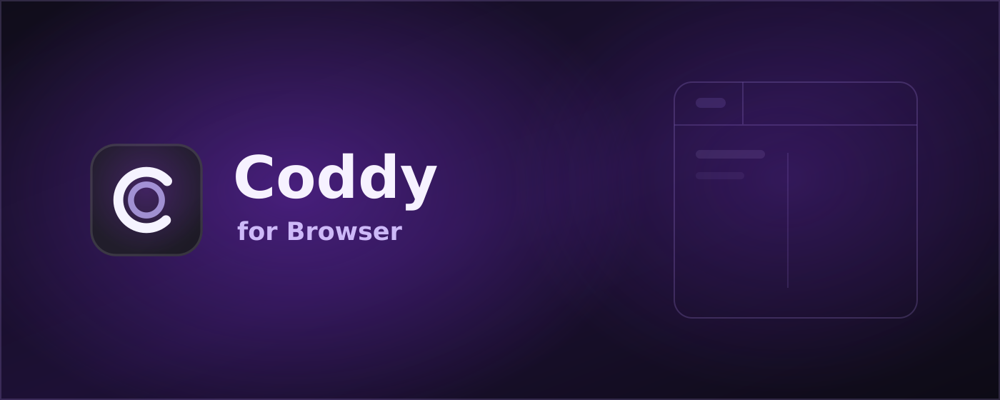
Marquee promo Chrome gallery
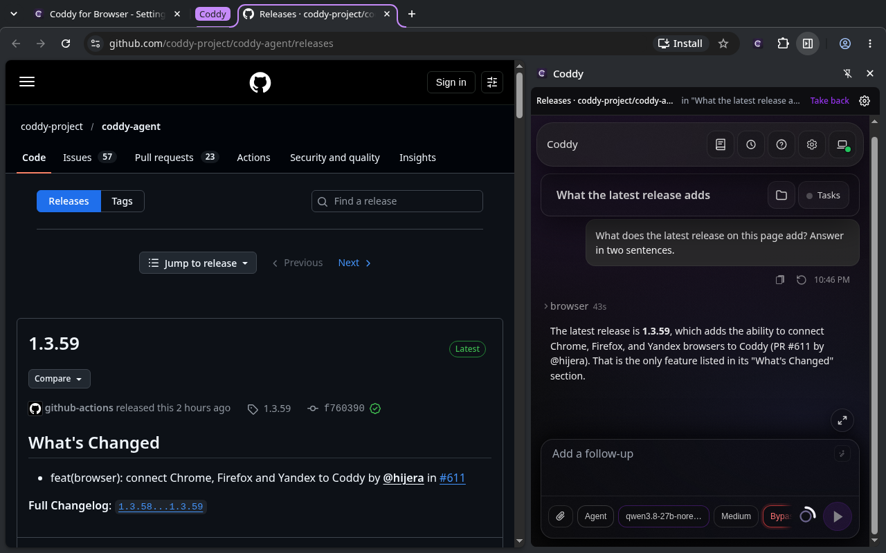
Ask your own Coddy about the page beside the chat.
cws/media/01-side-panel-dark.png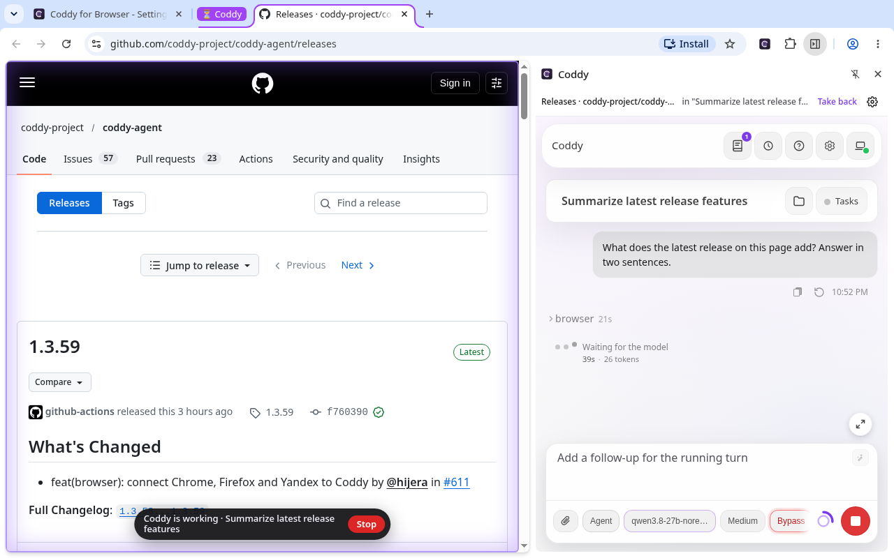
The working tab glows and offers a Stop button.
cws/media/02-working-tab.png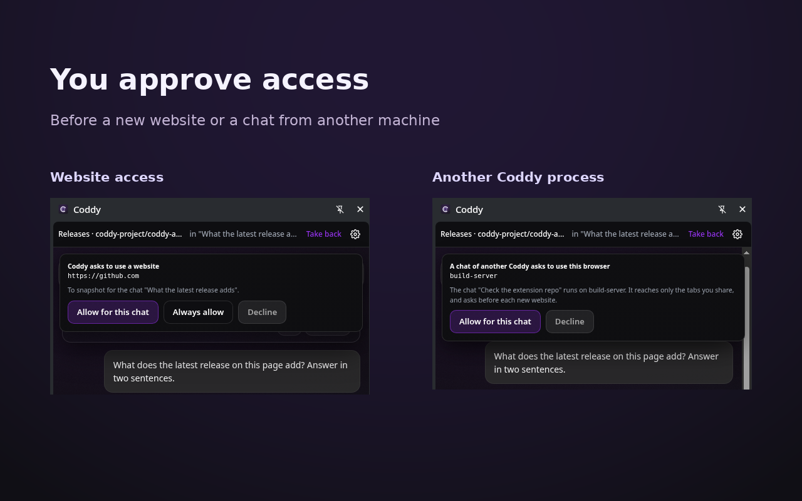
Approve a new website or a chat from another Coddy process.
cws/media/03-access-approvals.png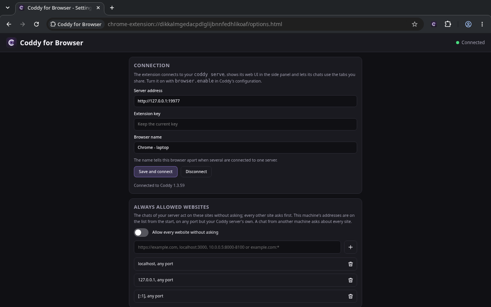
Connect your own server and manage website access.
cws/media/04-connection-settings.png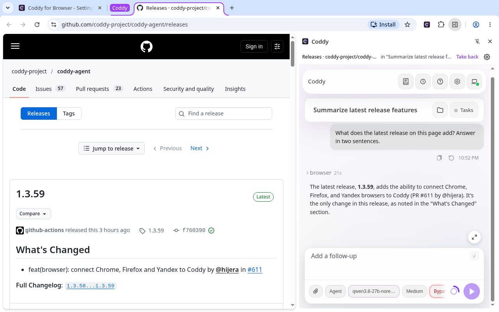
The same side-panel chat in the light theme.
cws/media/05-side-panel-light.pngFirefox gallery
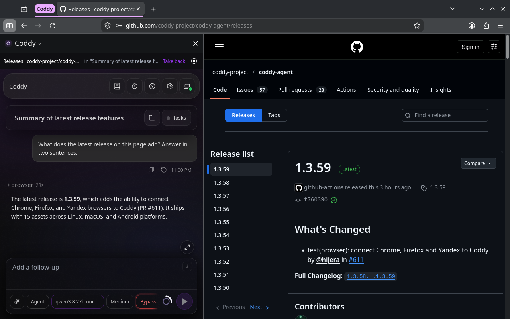
Chat with your Coddy in Firefox's sidebar beside the page.
amo/media/desktop-sidebar.png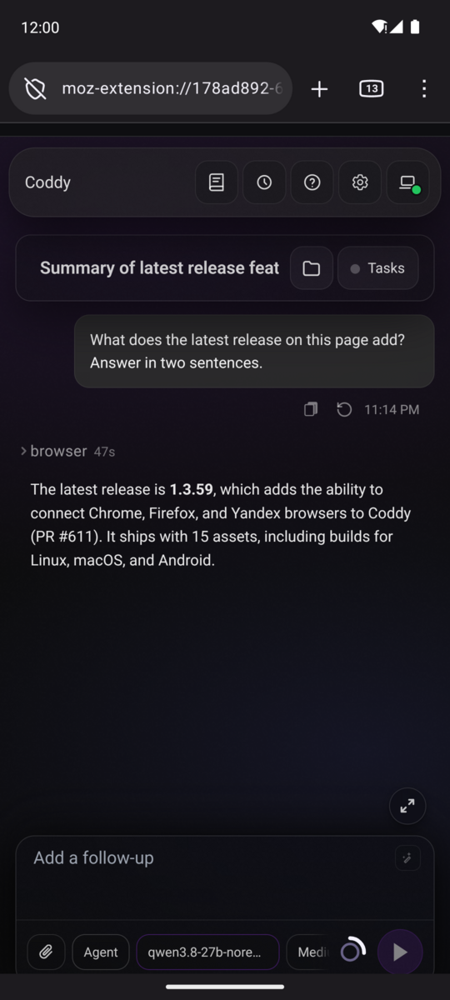
Firefox for Android opens the chat in a tab.
amo/media/android-chat.png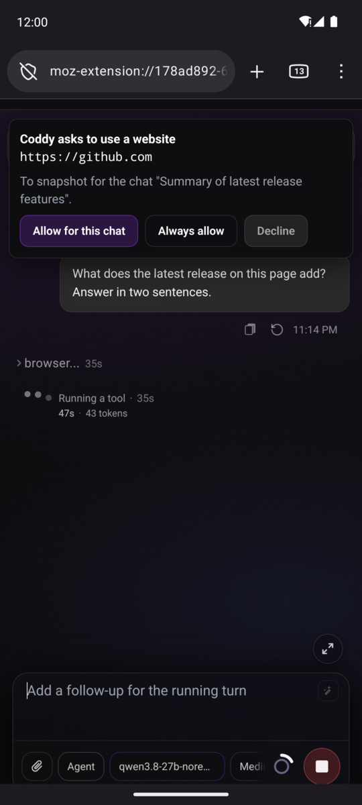
Approve website access on your phone before Coddy acts.
amo/media/android-approval.png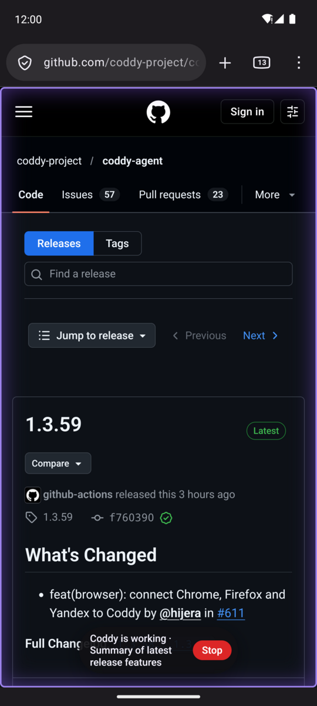
The active page is highlighted, with Stop available on Android too.
amo/media/android-working.pngOptional Android overview
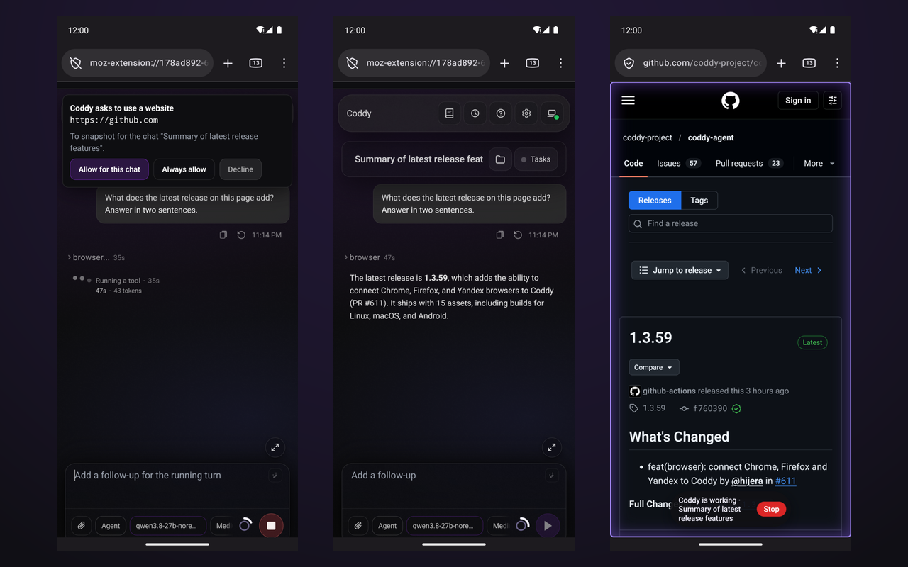
Website approval, chat and the working page. Three separate captures.Requirements, sources and upload instructions